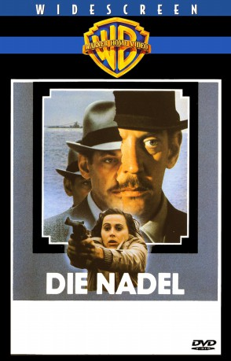

#8660 Die Nadel
Alternativ: Eye of the Needle
 
 IMDB-Wertung: 7.1 / 10
IMDB-Wertung: 7.1 / 10  Metascore: 0
Metascore: 0 
Englischer Spionage-Thriller von Richard Marquard aus dem Jahre 1981. Der deutsche Spion Henry Faber in England nur die Nadel genannt, findet während des Zweiten Weltkrieges ein wichtiges Detail raus: an welcher Stelle, die Alliierten am D-Day landen wollen. Als sein Fluchtversuch aus scheitert, stösst er auf ein Pärchen, das ihn rettet...
Jahr: 1981
Dauer: 111 Minuten
FSK: 12
Land: England Studio: United ArtistsTonspuren:
Untertitel: Deutsch,
Auflösung: 1080p (1920x1040) Größe: 7813 MB
Genre: Thriller, Krieg, Liebe
Regisseur: Richard Marquand
Drehbuch: Ken Follett
Soundtrack: Miklós Rózsa
Darsteller:
 Donald Sutherland als Faber
Donald Sutherland als Faber- Stephen MacKenna als Lieutenant
 Philip Martin Brown als Billy Parkin
Philip Martin Brown als Billy Parkin Kate Nelligan als Lucy
Kate Nelligan als Lucy- Christopher Cazenove als David
- Faith Brook als Lucy's Mother
 David Hayman als Canter
David Hayman als Canter Ian Bannen als Godliman
Ian Bannen als Godliman- Alex McCrindle als Tom
 John Bennett als Kleinmann
John Bennett als Kleinmann Richard Graydon als Home Guard Private
Richard Graydon als Home Guard Private Michael Mellinger als Portuguese Man
Michael Mellinger als Portuguese Man Don Fellows als American Colonel
Don Fellows als American Colonel Rik Mayall als Sailor
Rik Mayall als Sailor Bill Nighy als Squadron Leader Blenkinsop
Bill Nighy als Squadron Leader Blenkinsop Tony Clarkin als Sergeant Major (uncredited)
Tony Clarkin als Sergeant Major (uncredited) Derek Lyons als Soldier (uncredited)
Derek Lyons als Soldier (uncredited) Chris Parsons als Local Islander (uncredited)
Chris Parsons als Local Islander (uncredited) Rochelle Rose als Young Girl on Train (uncredited)
Rochelle Rose als Young Girl on Train (uncredited) Guy Standeven als Wedding Guest (uncredited)
Guy Standeven als Wedding Guest (uncredited)- George Belbin als Lucy's Father
- Barbara Graley als David's Mother
- George Lee als Constable
- Arthur Lovegrove als Peterson
- Colin Rix als Oliphant
- Barbara Ewing als Mrs. Garden
- Chris Jenkinson als German SS Officer
- William Merrow als German Radio Operator
- Patrick Connor als Inspector Harris
- Rupert Frazer als Muller
- Jonathan Nicholas Haley als Jo
- Sam Kydd als Lock Keeper
- John Paul als Home Guard Captain
- Stephen Phillips als Home Guard Corporal
- Allan Surtees als Colonel Terry
- Stewart Harwood als Sailor
- Rory Edwards als Sailor
- Ellis Dale als Station Master
- Bill Fraser als Mr. Porter
- Michael Josephs als German Naval Captain
- John Rees als German Naval Operator
- John Grieve als Inspector Kincaid
- Bruce White als Oban Policeman
- David Ashton als Oban Radio Operator
- Rita Tobin-Weske als Landlady (uncredited)
Datei: X:\1981\Nadel, Die (1981, FSK12, 1920x1040).mkv seit 13.04.2018
Festplatte: HD 1980-1986
 Es gibt insgesamt 33 Filme in der Gruppe '1981'
Es gibt insgesamt 33 Filme in der Gruppe '1981'